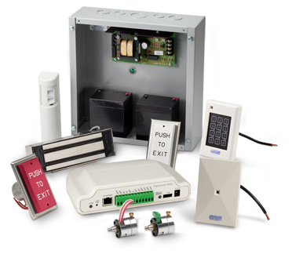
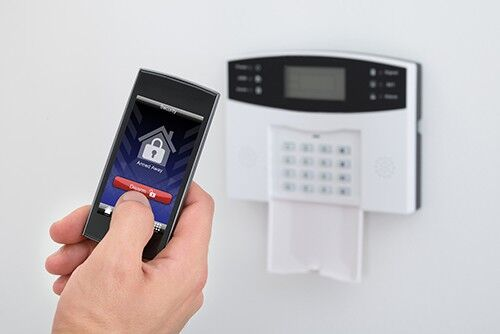

Dahua Batam
Layanan resmi pemasangan, konfigurasi, dan perawatan perangkat Dahua untuk rumah, gedung, dan industri di Batam dengan dukungan cepat dan bergaransi.

Solusi CCTV Dahua Terlengkap di Batam & Kepulauan Riau
Sebagai distributor resmi Dahua di Batam, kami menyediakan solusi keamanan terintegrasi untuk rumah, kantor, pabrik, dan industri di seluruh wilayah Kepulauan Riau. Dengan pengalaman lebih dari 10 tahun melayani klien di Batam, Tanjung Pinang, Karimun, dan pulau-pulau lainnya di Kepri.
Layanan Dahua Batam yang Kami Tawarkan
Solusi keamanan komprehensif untuk kebutuhan bisnis dan rumah di Batam & Kepulauan Riau
Instalasi & Konfigurasi Profesional
Pemasangan sistem CCTV Dahua dengan standar internasional untuk rumah, kantor, dan industri di Batam. Kami melayani pemasangan di seluruh wilayah Kepulauan Riau termasuk Tanjung Pinang, Karimun, Bintan, dan pulau-pulau terluar.
- Survey lokasi gratis di Batam & sekitarnya
- Perencanaan titik kamera optimal
- Penarikan kabel rapi dengan conduit
- Konfigurasi NVR/DVR & remote monitoring
- Optimasi rekaman & kualitas video 4K
- Training penggunaan sistem untuk user

Integrasi Sistem Keamanan Terpadu
Mengintegrasikan CCTV Dahua dengan sistem keamanan lainnya seperti access control, alarm, dan video analytics untuk memberikan perlindungan menyeluruh bagi properti Anda di Batam.
- Face recognition & people counting
- ANPR (Automatic Number Plate Recognition)
- Line crossing & intrusion detection
- Integrasi dengan access control system
- Centralized monitoring & management
- Mobile app DMSS untuk monitoring jarak jauh
Maintenance & Support 24/7
Layanan perawatan berkala dan dukungan teknis 24 jam untuk memastikan sistem CCTV Dahua Anda berjalan optimal. Kami memiliki tim teknis lokal di Batam yang siap merespons kapan saja.
- Maintenance preventif bulanan/triwulanan
- Health check sistem secara berkala
- Backup & restore konfigurasi
- Update firmware & perangkat keras
- SLA response time < 4 jam
- Garansi pekerjaan 2 tahun
Produk Dahua yang Kami Sediakan di Batam
Residential
Kamera dome, bullet, dan PTZ untuk rumah di Batam
- Dahua IPC-HFW series (Bullet Camera)
- Dahua IPC-HDBW series (Dome Camera)
- Dahua NVR series untuk home security
- Smart motion detection & night vision
- Mobile app DMSS untuk monitoring
- Cloud storage & backup solutions
Commercial
Sistem CCTV untuk kantor dan retail di Batam
- Dahua Pro Series untuk business
- Multi-channel NVR systems
- PTZ cameras untuk area luas
- Facial recognition & analytics
- Integration dengan access control
- Centralized monitoring system
Industrial
Solusi keamanan untuk pabrik dan gudang
- Industrial-grade IP cameras
- Explosion-proof camera systems
- High-temperature resistant models
- Corrosion-resistant housing
- Long-range surveillance cameras
- 24/7 monitoring capabilities
Warehouse
- Fisheye cameras untuk area luas
- License plate recognition systems
- Inventory monitoring solutions
- Motion tracking & analytics
- Low-light performance cameras
- Remote monitoring capabilities
Teknologi Terdepan Dahua yang Kami Implementasikan
AI-Powered Analytics
Teknologi kecerdasan buatan terdepan untuk analisis video yang akurat
- Face recognition dengan akurasi 99.5%
- People counting & crowd analysis
- Vehicle detection & tracking
- Behavior analysis & anomaly detection
- Object classification & tracking
- Real-time alert notifications
4K Ultra HD Technology
Resolusi video 4K untuk detail gambar yang sangat tajam
- 4K resolution (3840 x 2160 pixels)
- H.265+ compression untuk efisiensi storage
- Smart codec technology
- Enhanced night vision capabilities
- Wide dynamic range (WDR)
- Low-light performance optimization
Advanced Security Features
Fitur keamanan canggih untuk perlindungan maksimal
- Encrypted data transmission
- Secure authentication protocols
- Tamper detection & alerts
- IP66/67 weather resistance
- Vandal-proof housing design
- Cyber security compliance
Cloud & Mobile Integration
Integrasi cloud dan mobile untuk akses monitoring dari mana saja
- Cloud storage & backup solutions
- Mobile app DMSS untuk smartphone
- Remote monitoring capabilities
- Push notifications & alerts
- Multi-device synchronization
- Offline viewing capabilities
Seri Produk Dahua yang Tersedia di Batam
Dahua Pro Series
ProfessionalSeri profesional untuk aplikasi bisnis dan komersial
- IPC-HFW series (Bullet Cameras)
- IPC-HDBW series (Dome Cameras)
- IPC-PDBW series (PTZ Cameras)
- NVR series untuk recording
- Advanced analytics & AI features
- Enterprise-grade performance
Dahua Lite Series
EconomySeri ekonomis untuk aplikasi rumah dan usaha kecil
- IPC-HFW series (Basic Bullet)
- IPC-HDBW series (Basic Dome)
- NVR series untuk home use
- Essential features & functions
- Easy installation & setup
- Cost-effective solution
Dahua Ultra Series
PremiumSeri premium untuk aplikasi high-end dan enterprise
- IPC-HFW series (Ultra HD)
- IPC-HDBW series (Premium Dome)
- IPC-PDBW series (Advanced PTZ)
- Enterprise NVR systems
- AI-powered analytics
- Maximum performance & features
Proses Instalasi CCTV Dahua di Batam
Survey & Konsultasi
Tim ahli kami akan melakukan survey lokasi gratis untuk menganalisis kebutuhan keamanan Anda. Kami akan memberikan rekomendasi sistem CCTV Dahua yang sesuai dengan budget dan kebutuhan spesifik di Batam.
- Site survey gratis di Batam & sekitarnya
- Analisis kebutuhan keamanan
- Perencanaan titik kamera optimal
- Konsultasi sistem yang tepat
- Estimasi biaya yang transparan
Perencanaan & Design
Setelah survey, kami akan membuat design sistem CCTV yang detail termasuk layout kamera, routing kabel, dan spesifikasi peralatan yang dibutuhkan.
- Design layout kamera yang optimal
- Perencanaan routing kabel
- Spesifikasi peralatan yang tepat
- Timeline instalasi yang jelas
- Persetujuan design dari klien
Instalasi & Konfigurasi
- Instalasi kamera dengan standar profesional
- Penarikan kabel rapi dengan conduit
- Konfigurasi NVR/DVR system
- Setup remote monitoring
- Testing sistem secara menyeluruh
Training & Handover
Kami akan memberikan training lengkap kepada Anda tentang cara menggunakan sistem CCTV Dahua dan memberikan dokumentasi lengkap.
- Training penggunaan sistem
- Demo fitur-fitur utama
- Handover dokumentasi lengkap
- Setup maintenance schedule
- Kontak support 24/7
Aplikasi CCTV Dahua di Berbagai Sektor di Batam
Office & Corporate
Sistem keamanan untuk kantor dan korporasi
- Reception & lobby monitoring
- Parking area surveillance
- Meeting room security
- Employee access monitoring
- Visitor management system
- After-hours security
Manufacturing & Industrial
Sistem keamanan untuk industri dan manufaktur
- Production floor monitoring
- Equipment security
- Safety compliance tracking
- Quality control monitoring
- Asset protection
- Environmental monitoring
Retail & Commercial
Sistem keamanan untuk retail dan komersial
- Store surveillance
- Customer behavior analysis
- Loss prevention
- Cashier monitoring
- Inventory tracking
- Marketing analytics
Residential & Housing
Sistem keamanan untuk perumahan dan rumah
- Perimeter security
- Gate & entrance monitoring
- Garden & outdoor surveillance
- Family safety monitoring
- Pet & child monitoring
- Home automation integration
Healthcare & Medical
Sistem keamanan untuk rumah sakit dan klinik
- Patient room monitoring
- Emergency area surveillance
- Pharmacy security
- Staff safety monitoring
- Visitor tracking
- Medical equipment protection
Education & Schools
Sistem keamanan untuk sekolah dan universitas
- Classroom monitoring
- Playground surveillance
- Library security
- Student safety tracking
- Visitor management
- Emergency response
Mengapa Memilih Kami untuk Solusi Dahua di Batam?
Distributor Resmi & Berpengalaman
Sebagai distributor resmi Dahua di Batam dengan pengalaman lebih dari 10 tahun melayani klien di seluruh Kepulauan Riau. Tim kami tersertifikasi dan berpengalaman dalam instalasi sistem keamanan.
Coverage Seluruh Kepri
Melayani pemasangan CCTV Dahua di seluruh wilayah Kepulauan Riau termasuk Batam, Tanjung Pinang, Karimun, Bintan, Natuna, dan pulau-pulau terluar. Tim teknis lokal siap melayani kebutuhan Anda.
Support 24/7 & Garansi Lengkap
Harga Kompetitif & Transparan
Sebagai distributor resmi, kami menawarkan harga terbaik untuk produk Dahua di Batam. Tidak ada hidden cost, semua biaya transparan dari awal hingga selesai instalasi.